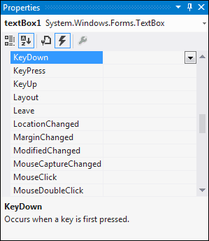
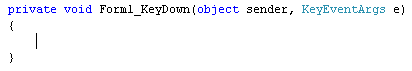
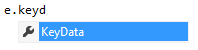
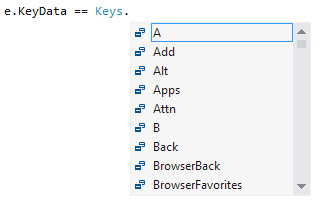

The KeyDown Event in C# .NET
The KeyDown event works in a similar way the MouseDown event - access an EventArg and write code to detect which key was pressed. But a KeyDown event for a form doesn't make much sense. So add a textbox to your form.
From the Properties area on the right, locate the KeyDown events for your textbox:

Now double click the name of the event to open up its code stub. You should see this:

This time, instead of MouseEventArg we have a KeyEventArgs. After typing a letter "e", you'll see the IntelliSense list display a list of available options. Select KeyData from the list:

The one you use to get at a particular key is the KeyData property. After a double equals sign, you then choose Keys from the IntelliSense list. Type another full stop and you'll see this list:

The list contains all the letters, characters and keys from your keyboard.
Wrap all this up in an IF statement and you'll have this:
Run your form and test it out. Click inside your textbox. You should see the message box appear when you press the letter "a" on your keyboard.